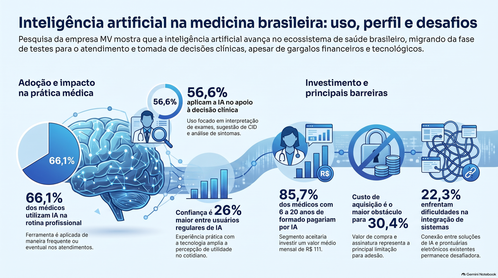
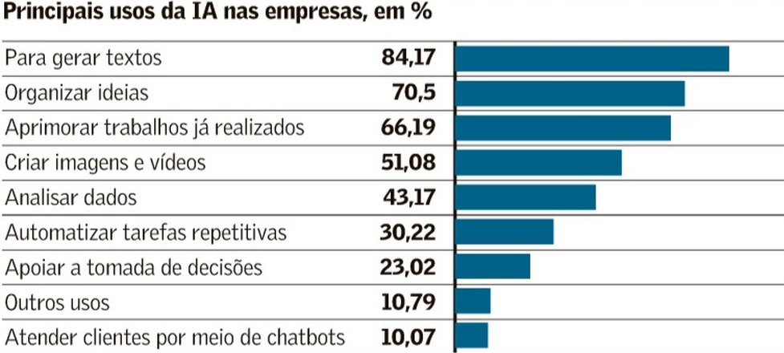

Slogan:O futuro é artificial mas o pensamento precisa continuar humano
• O que é Inteligência Artificial?
A Inteligência Artificial (IA) é uma tecnologia que permite aos computadores aprender com informações, identificar padrões e realizar tarefas que normalmente precisam da inteligência humana, como responder perguntas, reconhecer imagens e resolver problemas.
• Exemplos de IA no cotidiano:
•Celular: a IA pode reconhecer rostos, melhorar fotos e entender comandos de voz.
•Redes sociais: recomenda vídeos, músicas e publicações de acordo com o que você costuma assistir.
•Jogos: controla personagens e adapta os desafios ao jogador.
•Aplicativos: ajuda a traduzir idiomas, escrever textos e encontrar rotas no GPS.
• IA no cotidiano profissional:
-Educação: ajuda os alunos a estudar, tirar dúvidas e entender assuntos difíceis.
-Medicina: auxilia médicos a analisar exames e identificar possíveis doenças.
-Empresas: automatiza tarefas, organiza informações e melhora o atendimento aos clientes.
-Indústria: ajuda máquinas a fabricar produtos, identificar defeitos e aumentar a segurança.
Um dado:


• Como a IA está transformando as profissões?
A IA está mudando a maneira como as pessoas trabalham. Ela consegue realizar algumas tarefas repetitivas com rapidez, ajudando os profissionais a economizar tempo e se concentrar em outras atividades.
Ao mesmo tempo, algumas profissões estão mudando e novas oportunidades estão surgindo. Por isso, aprender a utilizar a IA será cada vez mais importante no mercado de trabalho.
• Por que precisamos aprender a conviver com essa tecnologia?
Porque a IA já faz parte do nosso cotidiano e continuará evoluindo. Precisamos aprender a utilizá-la de maneira responsável, verificar se suas respostas estão corretas e não depender dela para tudo.
•Em que momento deixamos a IA dominar nossa mente?
•Quando a facilidade virou dependência?
Quando começamos a usar a IA para tudo e esquecemos de pensar por conta própria.
1. A facilidade que transforma hábitos
A inteligência artificial facilita tarefas do dia a dia, mas seu uso excessivo pode gerar dependência e reduzir a iniciativa de buscar respostas e aprender por conta própria.
2. O risco de deixar de pensar por conta própria
Depender demais da IA pode prejudicar o pensamento crítico, a criatividade e a resolução de problemas. Por isso, é importante utilizá-la como ferramenta de apoio, sem substituir o raciocínio humano.
• Na vida estudantil:
- Copiar sem compreender
- Parar de treinar a escrita, a leitura e o raciocínio.
- Acreditar em tudo que a IA fala, mesmo quando está errado
- Dependência da tecnologia
• Na vida profissional e pessoal:
- Deixar a IA decidir sem pensar nas consequências
- Acreditar em todas as sugestões da tecnologia.
- Perder a criatividade
- Fornecer informações privadas sem pensar nos riscos.
• Como podemos usar a IA no dia a dia?
• Como professora
A IA pode explicar assuntos difíceis usando palavras simples e exemplos. Você também pode pedir exercícios para praticar.
• Para revisar matérias
Você pode pedir perguntas para testar o que aprendeu e descobrir quais assuntos ainda precisa estudar.
• Para organizar os estudos
A IA pode montar um cronograma de estudos de acordo com suas provas, tarefas e tempo disponível.
• Para melhorar textos
A IA pode corrigir erros de português, melhorar a clareza e sugerir mudanças sem tirar suas próprias ideias.
• Para planejar tarefas e ideias
Ela pode organizar uma lista de tarefas, separar prioridades e ajudar você a planejar projetos.
• Para programar e resolver problemas
A IA pode explicar códigos, encontrar possíveis erros e ensinar como resolver um problema passo a passo.
• Para verificar informações
A IA pode ajudar a encontrar fontes confiáveis, como universidades, artigos científicos e sites oficiais. Mas é importante conferir as fontes, porque ela também pode errar.
• O mundo além do Chat GPT
• Existem várias inteligências artificiais além do Chat GPT, e cada uma pode ser melhor para determinada tarefa.
• O T.I. é o futuro
A Tecnologia da Informação (TI) está presente em muitas coisas que usamos diariamente, mesmo quando não percebemos.
-Exemplo: quando você pede comida por um aplicativo, a tecnologia ajuda a registrar o pedido, avisar o restaurante e organizar a entrega.
• Toda empresa precisa de tecnologia
As empresas usam a tecnologia para trabalhar melhor, economizar tempo, organizar informações e atender mais clientes.
-Exemplo: imagine uma sorveteria que vende 100 picolés por dia. Sem um sistema, o dono pode se perder nas contas. Com um sistema, ele consegue registrar as vendas e saber quantos picolés ainda tem.
• O papel do Desenvolvimento de sistemas
O que significa?
Desenvolvimento de Sistemas é a área que cria os programas e sistemas que utilizamos.
Desenvolvimento de sistemas é o processo completo de criar, implementar e manter soluções de software para atender às necessidades específicas de usuários ou organizações, indo muito além da simples programação. Ele abrange desde o entendimento do problema e o levantamento de requisitos, passando pelo projeto e codificação, até os testes e a manutenção contínua do sistema, com o objetivo de automatizar processos e melhorar a eficiência dos negócios.
O que os profissionais fazem?
Os profissionais dessa área podem desenvolver:
• Sites, como lojas virtuais.
• Aplicativos para celulares.
• Sistemas para escolas e empresas.
• Jogos e ferramentas digitais.
• Soluções que utilizam Inteligência Artificial.
• Conhecendo o curso de Desenvolvimento de Sistemas (DS)
1. Introdução à Inteligência Artificial (IA)
Ensina conceitos básicos de tecnologias capazes de realizar tarefas como reconhecer padrões, interpretar textos e gerar respostas.
2. Arquitetura e Manutenção de Computadores
Ensina como os computadores são montados, quais são seus componentes e como identificar e corrigir problemas.
3. Lógica de Programação
Ensina como organizar o pensamento para resolver problemas e criar instruções que o computador consiga executar.